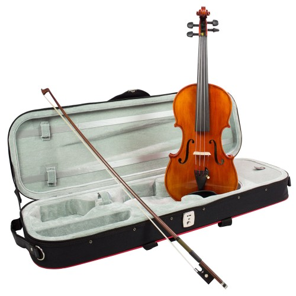

BIČIULIAI - DU SMUIKAI PRAVIRKO

Prisijungti
Registruotis
Klausytojams | Muzikantams Leidykloms | Verslui Registruotis NELEISK LIETUVIŠKAI
MUZIKAI NUTILTI!
Jūsų parama palaiko Lietuvos atlikėjus ir grupes.
Investuok į lietuvišką muziką.
Kviečiame paremti savo mylimus atlikėjus ir grupes! Rėmimo suma yra priskiriama grupei ar atlikėjui ir išmokama kartu su atlygiu už perklausas. Paremti galite naudojantis Paysera ar Paypal paslauga kiekvieno atlikėjo/grupės profilyje paspaudę mygtuką PAREMTI.
Ačiū, kad mylite ir remiate lietuvišką muziką!
Prisijungti Klausytis PAGRINDINIS MUZIKA PRISIJUNGTI Naujausia Mėgstamiausia Žanrai Atlikėjai Atlikėjų grojaraščiai Grojaraščiai Metai DUOKIM GARO! 100 GERIAUSIŲ DAINŲ Rinkinys Groti viską kupeta kas pas mumi dėjos Paremti nalšia nesižanyk, braliukai Paremti griežikai polka ''lipk ant sienų'' Paremti piliarožė o kas tau bernaitėlis Paremti ratasai kai aš turėjau Paremti kodravas mano širdis jau sužeista Paremti sadūnai aš išgėriau vienų Paremti vėl gegužio žiedai ėch ta laimė Paremti trys mylimos ei kūmuže kūmuže Paremti duja tomo polka Paremti sadūnai grieš armonika Paremti insula nebegrįšiu laukų takeliu Paremti ratuto raudona saulė nusileido Paremti dziedukai polka Paremti alka kaklelis gert ištroško Paremti prūsai ilgi ūsai mažas mažas staleliukas Paremti ratilai bitute samane Paremti šilkas valsas Paremti jorė polka ''marytė'' Paremti ratuto polka Paremti serbentėlė ant aukšto kalnelio. meilutė Paremti raskila pupų dėdės polka Paremti runga baigias skleistis jau baltosios rožės Paremti salduvė ir atjojo bernužėlis Paremti šeduvos bernai balnokim žirgus Paremti ratuto polka ''duokim garo'' Paremti sadūnai žvaigždė Paremti griežikai aš nusikirpsiu trumpai plaukus Paremti trys mylimos apie žvejus Paremti ansamblis „žibinyčia“ saulė nusileido Paremti gondinga jonkelis Paremti jorė dainuoju dainą Paremti duokim garo vedėjai žalias gojus Paremti insula polka Paremti skiemonių kapela sužibo toli žiburėlis Paremti baisogalos armonikininkai polka Paremti salduvė išsiskyrė keliai Paremti triskart du prie upės srovės bėgančios Paremti sadūnai mėnesėlis Paremti rudenėlis tamsi naktis Paremti ratuto palangos miestelis Paremti sendvaris čiulba ulba paukšteliai Paremti ratuto akšin žalnieriuka Paremti verpeta polka Paremti trys mylimos aš nueisiu į žalią girią Paremti raskila juozo polka Paremti kupeta jau nuvyto gėlė Paremti ratuto ar matai, kaip skęsta Paremti duokim garo vedėjai feat. griežikai anzelmutė Paremti sadūnai polka Paremti ratuto feat. dyvai bėginėjo povelė po dvarų Paremti sadūnai paukštela Paremti raskila gražių dainelių nedainuosiu Paremti girnapušė polka Paremti turava norėčiau mirt, kada pražydės gėlelė Paremti muzikontai iš pa utenas tyli naktis Paremti sadūnai obelis Paremti gondinga saulutė leidžiasi Paremti mingė fokstrotas kitaip Paremti kauno folkloro ansamblis „gilė“ ar pameni, mano mielas Paremti sadūnai polka vailakinė Paremti kapela rata menu aš tas dienas Paremti petronės armonikos valsas paukšteli daineli Paremti insula aukšti kalna Paremti etnografinis ansamblis ''šeduva'' kačerga Paremti raskila vai onula, vai sesula Paremti salduvė žiema Paremti mingė plaukia salos Paremti šeduvos bernai rasotų žiedų prisiskynęs Paremti ratuto oi broli broli Paremti runga paryčiais vėl anksti aš namo sugrįžtu Paremti molėtų armonikieriai dainio polka Paremti poringė bulviakasio polka Paremti insula žalioj girioj Paremti atžalynas durnapolkė Paremti triskart du suktinis paskutinis Paremti sadūnai polka ''gero ūpo!'' Paremti šeduvos bernai gaubia sutemos Paremti ratuto kiškelis Paremti telšių smagratis teresėli balundėli Paremti prūsai ilgi ūsai polka ''prūsai ilgi ūsai'' Paremti juozo armonikieriai gegužinės valsas Paremti bičiuliai du smuikai pravirko Paremti seno miesto muzikantai rozalijos valsas Paremti diemedis kalvarijos sav. kultūros centro folkloro ansamblis mano širdis jau sužeista Paremti ratuto ir vienąkart pavasarį Paremti vydraga polka Paremti kapela „lipk ant sienų“ sena patranka Paremti šeduvos bernai ain bernelis Paremti salako muzikantai zosiutės polka Paremti raskila tamburino polka Paremti kupolė rasotų žiedų prisiskynus Paremti bičiuliai tyliai plaukia Paremti mingė šleiva kreiva karvė Paremti sadūnai sena polka Paremti kapela rata valso sūkuriuos Paremti salduvė mudu sudiesma baltas ronkeles Paremti antazavės kapela polka su palaukimu Paremti bičiuliai saulutė teka rytuose Paremti jungtinė tradicinė kapela blindos polka Paremti Norint klausytis reikia prisijungti GROJARAŠTIS Privatumo politika © 2014-2020 Lietuvos gretutinių teisių asociacija AGATA Kraunama NAUDOJATE NELEISTINAS PROGRAMAS, PRAŠOME PAŠALINTI, NORINT NAUDOTIS TINKLAPIU.Šioje svetainėje naudojami slapukai
Informuojame, kad šioje svetainėje naudojami slapukai (angl. cookies). Sutikdami, paspauskite mygtuką „Sutinku“ arba naršykite toliau. Savo duotą sutikimą bet kada galėsite atšaukti pakeisdami savo interneto naršyklės nustatymus ir ištrindami įrašytus slapukus. Sutinku